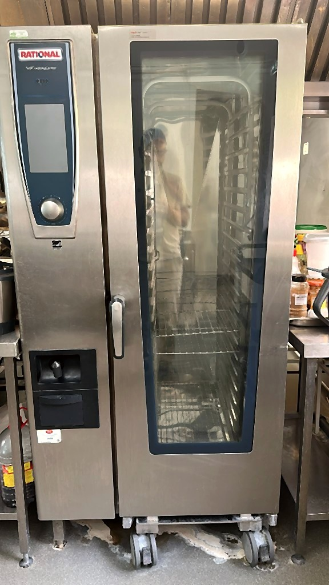
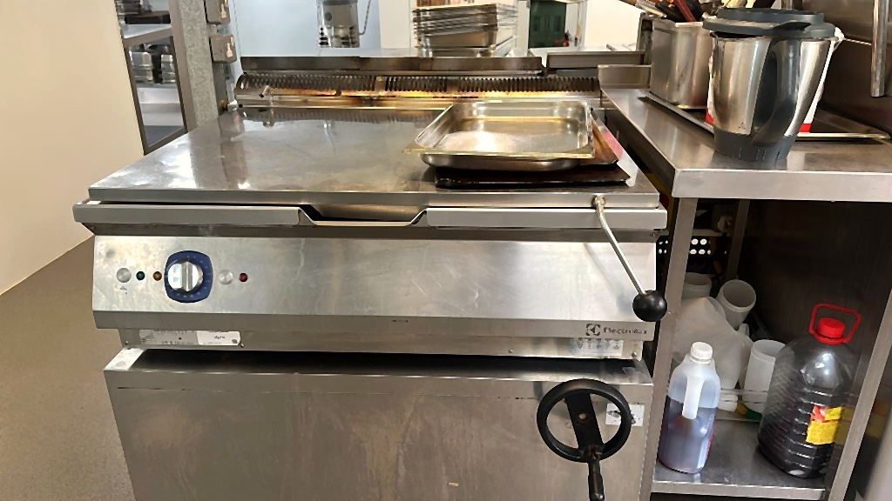
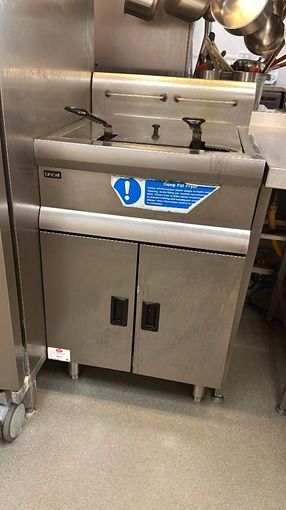
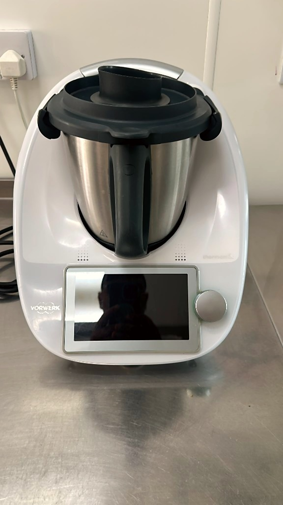

01 · FORMS
Reusable Kitchen Forms
K001–K025 kitchen/food records and P001–P006 workplace-safety records, with outcomes, corrective action, reviewer and revision history.
Professional dashboard, working kitchen forms, daily records, SOPs, food-safety logs, training evidence, equipment guidance, photographs and exportable records — connected instead of hidden across separate pages.
The working forms remain in the existing SOP system and keep revision history, local records and export options.
K001–K025 kitchen/food records and P001–P006 workplace-safety records, with outcomes, corrective action, reviewer and revision history.
Chef in charge, assigned kitchen porter/assistant, timings, prep, pot wash, floors, laundry, stores, handover, follow-up and signed review.
Delivery checks, refrigeration, cooking, reheating, hot holding, cooling, allergen handover, cleaning verification, hazards and daily review.
Equipment, cleaning, food safety, safe systems of work, visual guides and operating instructions in the original detailed pack.
Practice records, instruction evidence, acknowledgement names, restrictions, further training and competency follow-up.
Professional overview for service readiness, food safety, tasks, equipment, audit, staff names and operational actions.
Your existing forms already support PDF preview/save, printable templates, CSV export, JSON backup and saved revision history.
These repository images are still available and can continue to be linked into equipment, cleaning and training SOPs.



